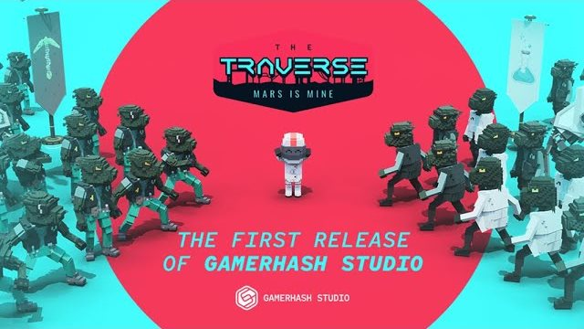

The Traverse
Fabularna platformówka w trzech częściach: rozbitek Astro ląduje na Marsie i trafia na kult gadzich istot pod wodzą Melona X. Odpowiadałem za to, w co gracz gra: mechaniki, zagadki, bossów i fabułę.
Zobacz w The Sandbox (otwiera się w nowej karcie)
Artykuł na Bitcoin.pl (otwiera się w nowej karcie)
- Moja rola
- Gameplay
- Zespół
- 6 osób
- Produkcja
- 18 miesięcy
- Platforma
- PC

Odtwórz trailer The Traverse (YouTube)Moja rola
- Mechaniki interakcjiObiekty, z którymi gracz wchodzi w interakcję: drzwi, urządzenia, przełączniki.
- Zagadki i walki z bossamiŁamigłówki do zadań i starcia, które spinają każdą z trzech części.
- Fabuła i dialogiLinia fabularna i dialogi postaci.
- Współpraca z grafikamiWdrażanie modeli VoxEdit do gry razem z zespołem artystów.
Wyzwanie: gra fabularna z najprostszych klocków
- Problem
- Wczesne wersje Sandbox Game Makera były mocno ograniczone. Praca była toporna, a do dyspozycji były głównie najprostsze moduły: platformy, przyciski, triggery. A gra miała mieć zagadki, walki z bossami i fabułę w trzech częściach.
- Rozwiązanie
- Złożone mechaniki składałem z tych prostych klocków: łańcuchy triggerów i przycisków budowały logikę zagadek, ruchome platformy i strefy obrażeń tworzyły fazy walk z bossami. Sprawdzone układy powtarzałem jako szablony, żeby kolejne poziomy szły szybciej.
- Efekt
- Pełnoprawna gra fabularna w trzech częściach, z zagadkami i bossami, mimo narzędzia, które na starcie nie było do tego stworzone.


Stack
Czego się nauczyłem
Jak projektować gameplay w narzuconym narzędziu i w dużej produkcji narracyjnej: questy, zagadki i walki muszą działać razem z fabułą i pracą grafików, a nie obok nich.